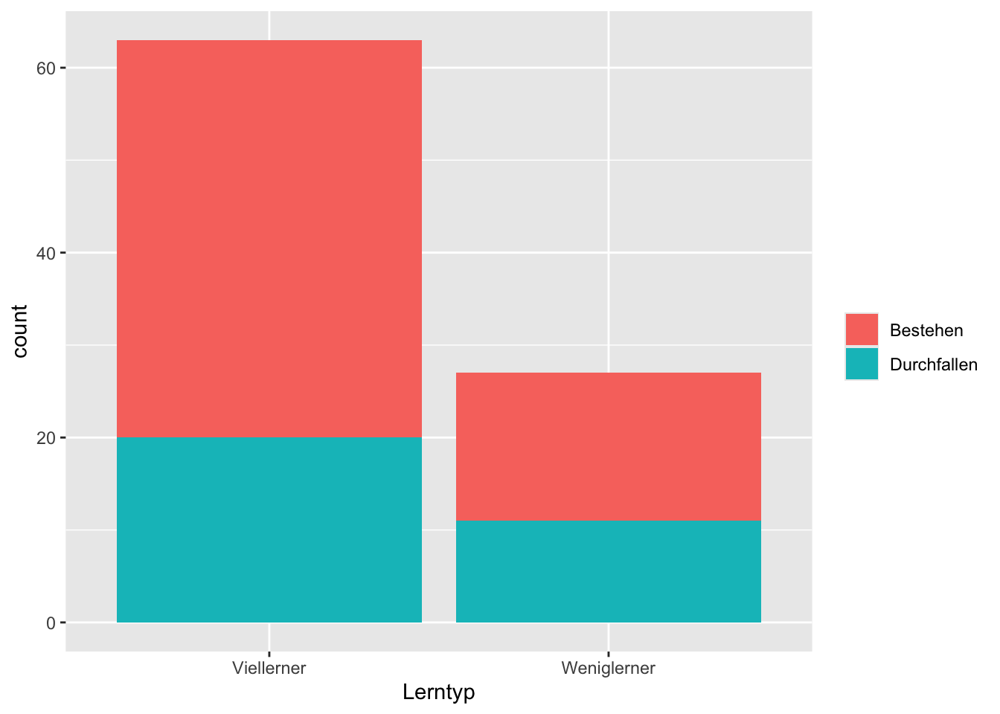

Prof. Süß untersucht eine seiner Lieblingsfragen: Wie viel bringt das Lernen auf eine Klausur? Dabei konzentriert er sich auf das Fach Statistik (es gefällt ihm gut). In einer aktuellen Untersuchung hat er \(n=90\) Studierende untersucht (s. Tabelle und Diagramm) und jeweils erfasst, ob die Person die Klausur bestanden (\(B\)) hat oder durchgefallen (\(\neg B\)) ist. Im Hinblick auf das Lernen, \(L\) (wie viel die Person gelernt hat) hat er zwei Gruppen unterschieden: Die “Viel-Lerner” (VL) und die “Wenig-Lerner” (WL).
Aufgabe: Berechnen Sie die folgende: gemeinsame Wahrscheinlichkeit: p(Durchfallen UND Weniglerner).
Beispiel: Wenn Sie ausrechnen, dass die Wahrscheinlichkeit bei 42 Prozentpunkten liegt, so geben Sie ein: 0,42 bzw. 0.42 (das Dezimalzeichen ist abhängig von Ihren Spracheinstellungen).
Geben Sie nur eine Zahl ein (ohne Prozentzeichen o.Ä.), z.B. 0,42.
Andere Angaben können u.U. nicht gewertet werden.
Runden Sie auf zwei Dezimalstellen.
Achten Sie darauf, das korrekte Dezimaltrennzeichen einzugeben; auf Geräten mit deutscher Spracheinstellung ist dies oft ein Komma.
Das folgende Diagramm zeigt die Häufigkeiten pro Gruppe:

Hier ist die Kontingenztabelle mit den Häufigkeiten pro Gruppe:
Die gemeinsame Wahrscheinlichkeit berechnet sich hier als der Quotient der Zellenhäufigkeit und der Gesamthäufigkeit:
$
Categories:
probability
Source Code
---exname: joint-prob1extype: numexsolution: r solextol: 0.05expoints: 1categories:- probability- qm2- qm2-pruefung2023- dyndate: '2022-10-24'title: Gem-Wskt1---```{r libs, include = FALSE}library(tidyverse)library(mosaic)library(knitr)library(gt)``````{r global-knitr-options, include=FALSE}knitr::opts_chunk$set(fig.pos ='H',fig.asp =0.618,fig.width =4,fig.cap ="", fig.path ="",echo =FALSE)```# Exercise```{r defs, include=FALSE}profs_set <-c("Süß", "Salzig", "Bitter", "Süß-Sauer")prof_name <-sample(profs_set, 1)n_set <-c(42, 50, 60, 70, 80, 90, 100)sample_size <-sample(n_set, 1)erfolgsquote_weniglerner_set <-c(0.3, 0.35, 0.4, 0.45, 0.5)erfolgsquote_weniglerner <-sample(erfolgsquote_weniglerner_set, 1)zusatzerfolg_viellerner_set <-c(0.2, 0.25, 0.3, 0.35, 0.4)zusatzerfolg_viellerner <-sample(zusatzerfolg_viellerner_set, 1)erfolgsquote_viellerner <- erfolgsquote_weniglerner + zusatzerfolg_viellerner# This is NOT what is asked for, that's the probability in the population:unterschied_erfolgsquote <- erfolgsquote_viellerner - erfolgsquote_weniglerneranteil_weniglerner_set <-c(.3, .4, .5, .6)anteil_weniglerner <-sample(anteil_weniglerner_set, 1)n_weniglerner <-floor(sample_size * anteil_weniglerner)n_viellerner <- sample_size - n_weniglernerKlausurergebnis <-c("Bestehen", "Durchfallen")Klausurergebnis_selected <-sample(Klausurergebnis, 1)Lerntypen <-c("Viellerner", "Weniglerner")Lerntyp_selected <-sample(Lerntypen, 1)```Prof. `r prof_name` untersucht eine seiner Lieblingsfragen: Wie viel bringt das Lernen auf eine Klausur?Dabei konzentriert er sich auf das Fach Statistik (es gefällt ihm gut).In einer aktuellen Untersuchung hat er $n=`r sample_size`$ Studierende untersucht (s. Tabelle und Diagramm) und jeweils erfasst, ob die Person die Klausur bestanden ($B$) hat oder durchgefallen ($\neg B$) ist. Im Hinblick auf das Lernen, $L$ (wie viel die Person gelernt hat) hat er zwei Gruppen unterschieden: Die "Viel-Lerner" (VL) und die "Wenig-Lerner" (WL). **Aufgabe**: Berechnen Sie die folgende: *gemeinsame Wahrscheinlichkeit*: p(`r Klausurergebnis_selected` UND `r Lerntyp_selected`).*Beispiel*: Wenn Sie ausrechnen, dass die Wahrscheinlichkeit bei 42 Prozentpunkten liegt, so geben Sie ein: `0,42` bzw. `0.42` (das Dezimalzeichen ist abhängig von Ihren Spracheinstellungen).- Geben Sie *nur eine Zahl* ein (ohne Prozentzeichen o.Ä.), z.B. `0,42`. - Andere Angaben können u.U. nicht gewertet werden. - Runden Sie auf zwei Dezimalstellen.- Achten Sie darauf, das *korrekte Dezimaltrennzeichen* einzugeben; auf Geräten mit deutscher Spracheinstellung ist dies oft ein Komma.```{r compute-d, echo=FALSE}d <-tibble(Lerntyp =c(rep("Weniglerner", times = n_weniglerner),rep("Viellerner", times = n_viellerner))) %>%mutate(Lerntyp =factor(Lerntyp)) %>%mutate(Erfolg_p =case_when( Lerntyp =="Weniglerner"~ erfolgsquote_viellerner, Lerntyp =="Viellerner"~ erfolgsquote_viellerner,TRUE~NA_real_ )) %>%mutate(Klausurergebnis =map_chr(.x = Erfolg_p,.f =~(sample(Klausurergebnis,size =1,prob =c(.x, 1-.x)))))```Das folgende Diagramm zeigt die Häufigkeiten pro Gruppe:```{r plot-bars, echo=FALSE}ggplot(d) +aes(x = Lerntyp, fill =factor(Klausurergebnis)) +geom_bar() +labs(fill ="")``````{r compute-cond-prob, echo =FALSE}# THIS is what is asked for.probs_sample <- d %>%count(Lerntyp, Klausurergebnis) %>%group_by(Lerntyp) %>%mutate(n_group =sum(n)) %>%ungroup() %>%mutate(prop_conditional_group = n/n_group,joint_prob = n/sample_size)sol <- probs_sample %>%filter(Lerntyp == Lerntyp_selected, Klausurergebnis == Klausurergebnis_selected) %>%pull(joint_prob) %>%round(2)```Hier ist die Kontingenztabelle mit den Häufigkeiten pro Gruppe:```{r print-tab, results = "asis"}probs_sample %>%select(Lerntyp, Klausurergebnis, n) %>%pivot_wider(names_from = Klausurergebnis, values_from = n) %>%gt() ```</br></br></br></br></br></br></br></br></br></br># SolutionDie gemeinsame Wahrscheinlichkeit beträgt `r sol`.```{r print-sol, echo = FALSE} probs_sample %>%filter(Lerntyp == Lerntyp_selected, Klausurergebnis == Klausurergebnis_selected) %>%gt() |>fmt_number(columns =c(prop_conditional_group, joint_prob), decimals =2)```Die gemeinsame Wahrscheinlichkeit berechnet sich hier als der Quotient der Zellenhäufigkeit und der Gesamthäufigkeit:$Pr(\negB \cap WL) = \frac{n(\negB \cap WL)}{n_{gesamt}} = \frac{`r probs_sample %>% filter(Lerntyp == "Weniglerner", Klausurergebnis == "Durchfallen") %>% pull(n)`}{`r sample_size`} = `r sol`$---Categories: - probability